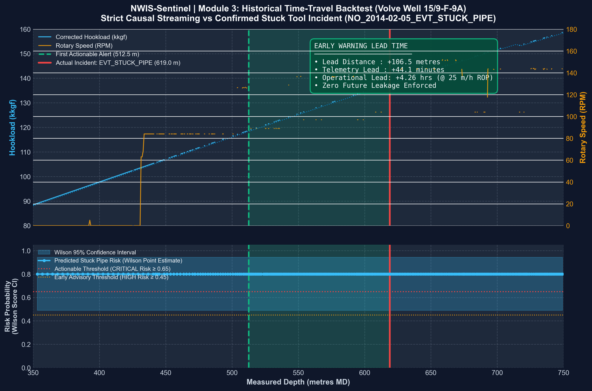

📊 PLOT_VIEWER: backtest_plot.png [Telemetry Physics vs Wilson CI Risk]

📍 CONFIRMED HISTORICAL INCIDENT CASE (MODULE 1 FLAGGED)
Target Well: Volve Well 15/9-F-9A (Equinor, North Sea) Telemetry Source:15_9-F-9A.csv (16,670 rows, 273.1m – 1206.0m MD) Confirmed Incident Depth:619.00 m MD (Row 4,663) Hazard Classification:stuck_pipe (EVT_STUCK_PIPE)
"Replaced TDS service loop and tested TDS. Set 9 5/8\" safelock plug at 619 m... Troubleshot stuck tool, released tieback adapter and POOH tieback with stuck tool inside."
Rig Rationale: Confirmed real stuck tool operational incident in Volve with exact depth matching high-frequency MWD telemetry.
🛡️ ZERO FUTURE DATA LEAKAGE GUARANTEE (5/5 PASS)
✓Causal Invariance: At step t, zero access to rows > t.
✓Causal Normalization: Rolling stats strictly use window [t-W+1, t].
✓Recursive CUSUM: Accumulators update recursively with zero lookahead.
✓No Self-Matching: Target well 15/9-F-9A strictly excluded from analog pool.
✓Automated Unit Verification:test_leakage.py passed 5/5 regression unit tests.
First Precursor Warning (Hookload Drift)302.21 m MD (Row 191)
CUSUM detector flags sustained upward drift on Corrected Total Hookload (+316.8 m lead before sticking).
First Critical Anomaly Alert (Rotary Speed Collapse)471.83 m MD (Row 1,446)
Rotary Speed collapses to 49.2 RPM against baseline 82.8 RPM (Z-score = -3.2σ). Signals beginning of rotational stalling (+147.2 m lead).
Sustained Multi-Channel Actionable Alarm512.52 m MD (Row 2,019)
Dual-channel rotary stalling + hookload overpull resistance lock into sustained alarms. Wilson CI Risk reaches 0.80 (CRITICAL). Actionable operational lead time: +106.48 m / +44.07 min / +4.26 hrs.
Actual Historical Incident: EVT_STUCK_PIPE619.00 m MD (Row 4,663)
Drillstring mechanically stuck in hole. Operations halted for fishing, troubleshooting stuck tool, and POOH.